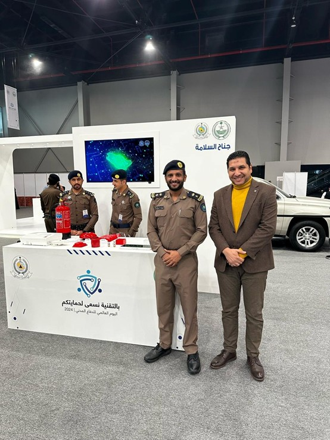
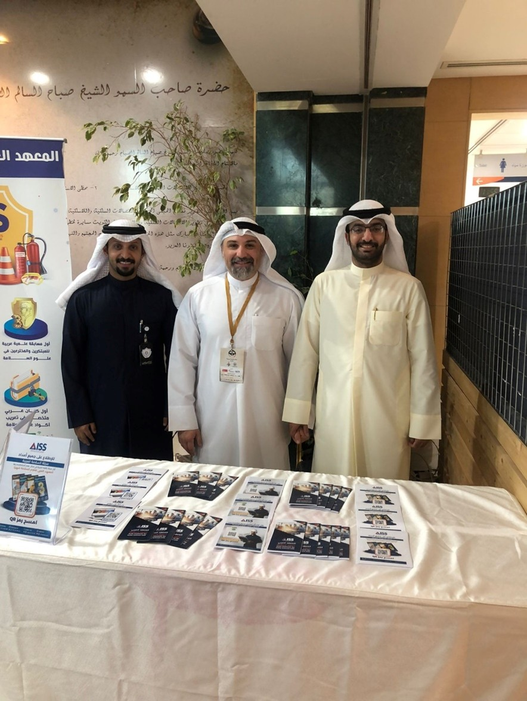
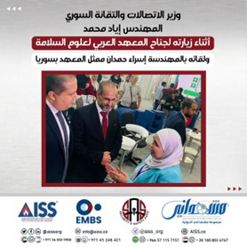
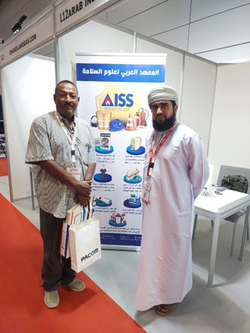
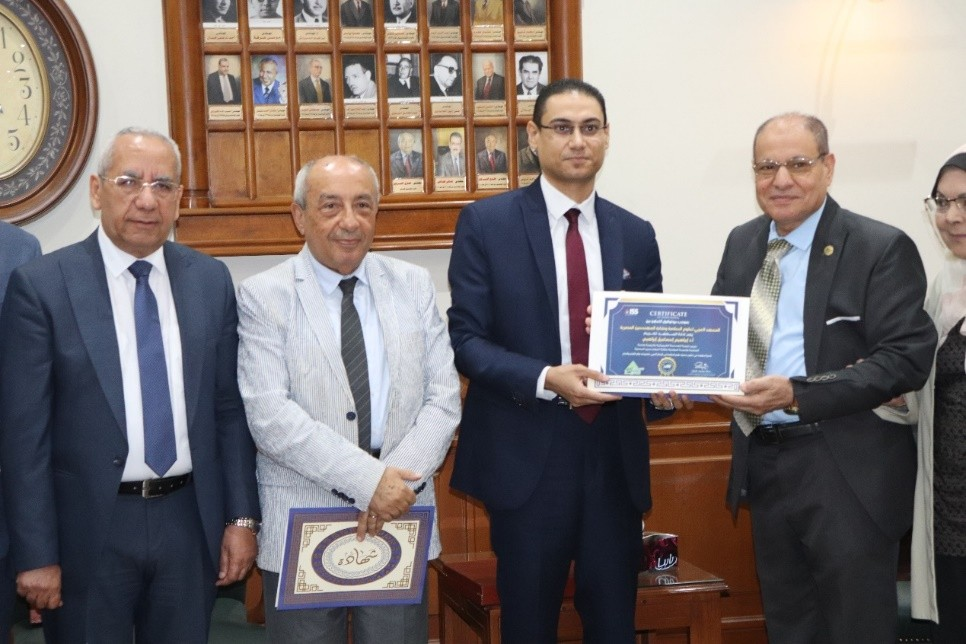

يناير 2026
زيارة الجمعية الثقافية والرياضية لرجال الإطفاء - برشلونة
تشرف د. محمد كمال ود. الخضري بزيارة المقر لتعزيز سبل التعاون الدولي.
تشرف د. محمد كمال ود. الخضري بزيارة المقر لتعزيز سبل التعاون الدولي.

مشاركة المعهد تحت رعاية سمو الأمير سعود بن بندر في "الظهران إكسبو".

تمثيل المعهد بواسطة المهندس عبد الله حمود الغريب.

مشاركة المعهد كراعي ماسي ممثلاً بالمهندسة إسراء حمدان وشركة EMBS.

مشاركة فاعلة للمعهد في مركز عُمان للمؤتمرات والمعارض.

تقديم درع السلامة العربي للمهندس طارق النبراوي تقديراً لجهوده في تطوير علوم السلامة.